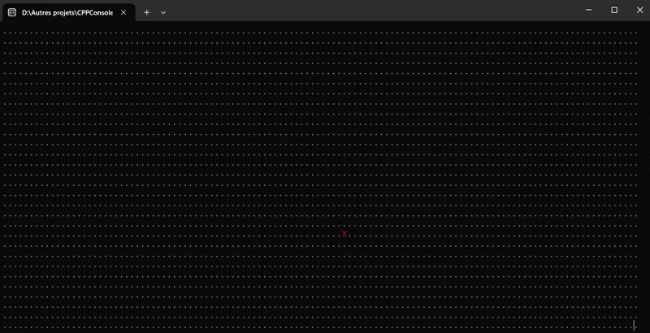

Projet de 3ème année, notre premier jeu fait en C++. Le principe du jeu est que le joueur incarne un employé de coffee shop en fin de journée, et
doit survivre à l'attaque d'un tueur en série qui le piège dans la boutique.
Build
Informations
3 personnes
1 semaine
C++
Résumé du projet
Le but du projet était de faire un jeu intégralement en C++ et qui implémentait au minimum deux design patterns. Après avoir itéré un peu sur le game design,
nous avons décidé de faire un jeu d'horreur basé sur le son, dans lequel le joueur se baladerait sur la map, cette dernière étant affichée grâce à des
caractères ASCII dans la console Windows.
En travaillant le game design ainsi que l'architecture UML, deux patterns se sont dégagés assez naturellement : d'un côté la State Machine pour gérer le
comportement du tueur, afin qu'il soit un minimum imprévisible et donc qu'il instaure une tension et une peur chez le joueur. D'un autre côté, le pattern
Observer s'accordait avec le pitch du jeu, puisque nous voulions que des sons d'ambiance se déclenchent par moments, que ce soit en réaction à certaines
actions ou bien aléatoirement, pour renforcer l'atmosphère tendue.
On considère le projet comme étant une réussite car les deux patterns sont implémentés et utilisés correctement, nous avons dépassé les attentes en terme
de jeu, et l'architecture du code n'a qu'un point faible visible mais facilement corrigeable.
Peu avant ce projet, j'avais fait en quelques jours un protoype d'un personnage qui se déplacait sur une map en ASCII dans la console,
ainsi qu'une bonne dose de veille technique. C'est donc naturellement que j'ai continué dans cette direction, en m'occupant de toute la partie
création et affichage de la map, ainsi que des intéractions du joueur avec cette dernière (donc tout ce qui est déplacement, collisions,
ouvertures de portes, ramassage d'objets, etc...).
Mon rôle était donc en grande majorité de coder et implémenter ce système, mais aussi d'assister mes coéquipiers d'abord quand ils avaient des questions
mais aussi lorsque ils avaient besoin de récupérer des données en lien avec la map (position du tueur, salle actuelle du joueur, salles adjacentes
à une position, etc...).

Prototype de la map
On peut voir ici le protoype de map et de déplacement que j'ai fait en quelques jours, peu avant le projet. Le joueur peut se déplacer sur une
map composée d'un caractère ASCII.
On pouvait, dans cette version déjà, choisir les caractères symbolisant le sol et le joueur, changer leurs couleurs,
et la taille de la map s'adaptait automatiquement à la taille de la fenêtre. De plus, tous les caractères s'affichent en même temps, ce qui non seulement
accélère l'affichage et permet un plus grand contrôle, mais aussi augmente l'immersion puisque il n'y a quasi aucune transition entre deux frames.
Le procédé que j'utilise ici et dans le jeu final est de stocker la map finale (donc la map, avec la position du joueur, du tueur, des collectibles,
et des portes) dans un buffer qui fait la taille de la fenêtre et que j'affiche en une seule fois à chaque frame.
Cette méthode me permet un contrôle total sur l'affichage, en tenant compte des limites de la console Windows que ce soit de taille, de couleurs disponibles
ou de rapidité d'affichage.
Map finale
La version finale de la map est faite de façon à ce que chaque salle soit symbolisée par son propre caractère, de même que pour chaque "paire de portes".
Cela nous permet notamment de récupérer la porte qui mène à celle sur laquelle se tient le joueur, puis de récupérer la salle de cette porte pour
détecter si le tueur s'y trouve.
De même, chaque caractère de salle est associé aux caractères qui lui sont adjacents sur la map, ce qui sert à récupérer rapidement les salles autour
d'une position donnée. Les murs sont symbolisés par des "#" pour gérer les collisions, et les collectibles par des "@".
Au début de chaque frame, lorsque le buffer cité plus haut se crée, chaque élément est affiché différemment (joueur en jaune, murs en rouge...) selon notre choix.


 3 personnes
3 personnes
 1 semaine
1 semaine
 C++
C++